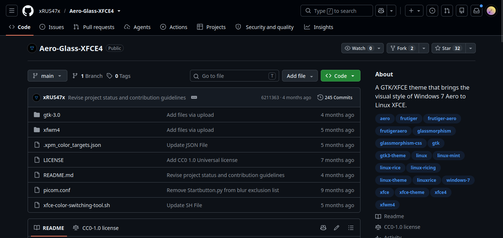

Esse é um tutorial de como instalar temas do Github no seu linux (Debian/Ubuntu/OxyohanOS). Lembrando que isso funcionará para as interfaçes XFCE e Cinnamon
Pesquise na internet qual tema dessas duas interfaçes você deseja colocar em seu desktop linux e acesse o github deles

Baixe o tema do .zip do github (Estou usando ele de exemplo e você pode acessa-lo por AQUI!!!)
Se tiver um script install.sh é até melhor dependendo do tema :)
Vá no seu gerenciador de arquivos de seu linux e aperte Ctrl+H ou vá nas configurações e hebilite para ver pastas e arquivos ocultos.
Na sua pasta de usuário haverá uma pasta chamada .themes que é a pasta onde estará os seus temas.
Pegue a pasta do tema e coloque-a no
.themes e quando você for no XFCE ou Cinnamon e ir na parte de Temas, aparecerá o seu tema lá